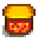

Misiones:
Las Misiones son una serie de objetivos que otorgan recompensas una vez completadas. Se les pueden hacer seguimiento en el diario de misiones, que se puede abrir pulsando el icono con el signo de exclamación situado en la parte inferior de la indicación de fecha/hora, en la parte superior derecha de la pantalla, o utilizando la tecla de acceso rápido F. Las misiones están listadas en el diario por título y cada misión se puede expandir para leer el texto y requisitos para completarla. Haciendo clic en la "X" en la parte de arriba de la ventana hará que se cierre y también hay un botón debajo de la ventana del diario para cancelar la misión seleccionada.
Hay dos tipos principales de misiones: las de historia y las de «Necesito ayuda». Las misiones de historia son recibidas típicamente en el correo, pero algunas se aceptan automáticamente en el inicio del juego para enseñar al jugador sobre el juego. Las misiones de historia puede ser completadas en cualquier momento después de recibirlas, no hay tiempo límite, ni tampoco fecha de expiración.
Misiones «Necesito ayuda»
Cada día, la tabla de anuncios afuera de la Tienda local Pierre's puede tener misiones «Necesito ayuda» generadas aleatoriamente que puedes completar a cambio de dinero y a veces incrementar la amistad con quien te dio la misión. Cuando una misión esté disponible, la tabla de anuncios tendrá un signo de exclamación amarillo flotando encima. La recompensa del dinero depende del número de artículos/monstruos involucrados, las habilidades del jugador y a veces un poco al azar. Una vez que hayas aceptado la misión «Necesito ayuda», tendrás 2 días para completarla, el día presente y el siguiente.
Si un día de festival ocurre durante el periodo de 2 días, puede ser que ya no puedas completar la misión en ese día festivo ya que la mayoría de tiendas y hogares están "cerrados". Consulte la página de horario de tiendas para más información.
Logros
Hay 2 logros asociados a completar misiones «Necesito ayuda». Tenga en cuenta que completar las misiones de Pedidos Especiales (tanto las del Sr. Qi como las de Pueblo Pelícano) cuentan para las misiones de «Necesito ayuda» requeridas.
- Recadero (Completa 10 peticiones de «Necesito ayuda».)
- Una Gran Ayuda (Completa 40 peticiones de «Necesito ayuda».)
Conseguir estos logros desbloquea Sombreros únicos en la Casa Abandonada del Bosque Tizón. Además, al día siguiente de conseguir "Recadero", Lewis enviará  500 por correo. El día siguiente de conseguir "Una Gran Ayuda", Lewis enviará 2500 por correo.
500 por correo. El día siguiente de conseguir "Una Gran Ayuda", Lewis enviará 2500 por correo.
Tipos
Hay 4 tipos de misiones «Necesito ayuda» que se pueden publicar en la tabla de anuncios. No hay penalidad por aceptar una misión y no completarla.
| Recolección |
Clint pedirá al jugador que recolecte menas de cobre, hierro u oro, usualmente 20-40, o carbón para que él lo inspeccione; o Robin pedirá al jugador que consiga madera o piedra. Los objetos deben recolectarse después de aceptar la misión. Los objetos guardados en el inventario o en cofres no funcionarán. No es necesario tener los objetos solicitados en el inventario para completar una misión de recolección. Una vez que se haya reunido el número de objetos necesario (tal y como indica el contador del diario), bastará con hablar con el aldeano que solicitó los objetos para completar la misión. |
| Matar monstruos |
Requiere acceso a Las Minas. Clint, Lewis, Demetrius, o el Mago pedirán al jugador que mate un número aleatorio de un monstruo específico. Una vez que el número de monstruos requeridos han sido asesinados (como se indica en el contador de la misión en el diario), conversar con el aldeano que requirió la ayuda completará la misión. Ten en cuenta que un aldeano nunca pedirá a un jugador que mate a un monstruo al que aún no tiene acceso. Por ejemplo, nunca se le pedirá que mate a un Chamán de las sombras hasta que el jugador haya alcanzado al menos el nivel 80 de Las Minas. |
| Pesca |
Demetrius o Willy pedirán al jugador que atrape entre 1-5 peces en específico de la estación actual, para bien mantener baja la población de ese tipo de pez, o para mantener vivo el arte de pescar. La recompensa está basada en el precio de venta del pescado × el número de pescados requeridos y el jugador se puede quedar con los pescados. Ten en cuenta que no es necesario tener los peces solicitados en el inventario para completar una misión de pesca. Cuando hayas capturado el número de peces necesario (como indica el contador del diario), habla con el aldeano que hizo la petición para completarla. |
| Entrega |
Esta es la misión «Necesito ayuda» más común de todas. Cualquier aldeano que hayas conocido y puedas obtener puntos de amistad, pueden pedirte un artículo aleatorio por varias razones. Estos artículos pueden ser:
Los aldeanos recompensarán al jugador con oro equivalente a tres veces el valor normal del objeto, lo que puede hacer que las misiones de entrega de objetos sean un método más eficaz para ganar dinero con los objetos que venderlos por medio de la caja de envíos. El jugador también ganará 150 puntos de amistad con el aldeano que haya pedido tu ayuda por completar la misión, con la excepción de los cónyuges divorciados. Para completar la misión de entrega, es necesario entregar el objeto hacia las manos del aldeano que pidió tu ayuda. Simplemente tener el objeto en el inventario cuando hables con el aldeano no completará la misión. Tenga en cuenta que completar una misión de entrega no cuenta como si hubieses dado un regalo al aldeano. Tenga en cuenta que: Jas, Vincent, Krobus, el Enano y el cónyuge del jugador nunca hará misiones de Entrega. Sandy te dará misiones de entrega una vez tengas acceso al Desierto. Si el jugador aún no ha conocido a un aldeano, éste no le pedirá ningún objeto. Las posibilidades de que haya una misión de "Entrega de objetos" no aumentarán a medida que el jugador conozca a más aldeanos. |
Lista de misiones de historia
Adicionalmente a las misiones publicadas en la tabla de anuncios «Necesito ayuda», también hay muchas Misiones de Historia que se desbloquean en el transcurso del juego. No hay penalidad por aceptar una Misión de Historia que involucre la entrega de un objeto y luego borrarla de tu diario sin completarla. Las misiones de historia no cuenta para los logros: "Recadero" y "Una gran ayuda".
Tener en cuenta que el juego agrega 255 puntos de amistad para las misiones que dicen "1 corazón de amistad", en vez de exactamente 250 puntos.
| Nombre de la misión | Texto de la misión | Dada por | Requisitos | Recompensas |
|---|---|---|---|---|
| Presentaciones | Sería todo un detalle que te presentaras a los vecinos. Algunos se mueren de ganas de conocerte. | Misión introductoria | 28 personas saludadas. | 100 puntos de amistad (2/5 de un corazón) con cada NPC conocido. |
| Cómo hacer amigos | Dar regalos es una gran manera de trabar amistades. Apréndete los gustos de cada uno y serás popular en un abrir y cerrar de ojos. | Completa «Presentaciones» | Dale un regalo a alguien. | 100 |
| Cómo empezar | Si quieres llevar una granja tendrás que empezar por lo básico. Utiliza tu azada para arar y luego usa un paquete de semillas en el suelo arado para plantar un cultivo. Riégalo todos los días hasta que esté listo para cosechar. | Paquete en tu casa al comienzo | Cultiva y cosecha una chirivía. | 100 |
| A la playa | Alguien llamado Willy te ha invitado a visitar la playa que hay al sur del pueblo. Dice que tiene algo para ti. | Correo, Primavera 2 | Visita la playa que hay al sur del pueblo antes de las 17:00. | Caña de bambú |
| Crianza animal | Robin, la carpintera local, vive al norte del pueblo. A cambio de materias primas y dinero, construirá edificios en tu granja. Necesitarás que te construya un corral o un establo para criar animales. | Completa «Cómo empezar» |
Construye un Corral. Tenga en cuenta que no es necesario comprar animales. |
100 |
| Avanzar | A medida que adquieras experiencia, descubrirás nuevos objetos fabricables para aumentar tus beneficios y hacer tu vida más fácil. Un espantapájaros, por ejemplo, evitará que los cuervos se ceben con tus preciados cultivos. | Completa «Cómo empezar» | Alcanza el nivel 1 de Agricultura y fabrica un Espantapájaros. | 100 |
| Exploración minera | Hay un viejo pozo minero en las montañas al norte del pueblo. Podría albergar valiosos minerales, pero Marlon ha insinuado que podría ser peligroso adentrarse en él. | Entra a las minas. | Desciende hasta el piso 5 de Las Minas | |
| Adéntrate en la mina | Parece que el ascensor de la mina todavía funciona. Te permitirá volver rápidamente a todas las puertas de ascensor que hayas descubierto. Puede que haga falta una exploración más a fondo. | Desciende hasta el piso 5 de Las Minas | Desciende hasta el piso 40 de Las Minas. | |
| ¿Y el fondo? | De momento no hay ni rastro del fondo. ¿Hasta dónde bajará? | Desciende hasta el piso 40 de Las Minas | Desciende hasta el fondo de Las Minas. | |
| Arqueología | Gunther te ha preguntado si considerarías donar nuevos artefactos o minerales que descubras al museo. Dice que te compensará con objetos poco comunes. | Entra al Museo con un mineral o artefacto en tu inventario. | Dona un artefacto o un mineral al Museo. | 250 |
| Problema con las ratas | Algo raro pasa en el antiguo Centro cívico... Investiga el Centro cívico. | Activa la escena inicial del Centro Cívico entrando al Pueblo Pelícano desde la parada de autobús entre las 8:00 AM y 1:00 PM en un día soleado (Primavera 5+). | Ingresa al Centro Cívico y examina el pergamino dorado en la Sala de manualidades. | En la mañana siguiente, una carta del Mago llegará a tu correo, activando la misión: "Visita al mago". |
| Visita al mago | Has recibido una carta del mago local. Afirma disponer de información sobre el antiguo centro cívico. | En la mañana siguiente, después de que examines el pergamino dorado en el Centro Cívico, recibirás una carta del Mago diciéndote que tiene información para ti. | Entra en la Torre del Mago. | El Mago te dará una poción que te permitirá leer el idioma de los Junimos. |
| Forjando el futuro | Si vas a seguir excavando deberías construir un horno. | A la mañana siguiente de recoger una Mena de cobre, Clint visita al jugador y le da los planos del Horno. | Fabrica un Horno. | |
| Fundición de metales | Ahora que has construido un horno puedes fundir metal. Según las instrucciones de Clint, el horno debería producir un lingote de cobre si utilizas 5 menas de cobre y 1 trozo de carbón. | Completa «Forjando el futuro» | Usa tu horno para producir un lingote de cobre. | |
| Iniciación | Si consigues acabar con 10 babas, te habrás ganado una plaza en el Gremio de Aventureros. | Buzón de correo, la mañana siguiente después de alcanzar el piso 5 en Las Minas | Mata 10 Babas Verdes en Las Minas o el Bosque secreto. | Acceso al Gremio de Aventureros. |
| El hacha perdida de Robin | Robin ha perdido su hacha preferida. La última vez que recuerda haberla usado estaba cortando madera al sur del rancho de Marnie. | Correo, Primavera 11 |
Encuentra el hacha perdida de Robin. Puede ser encontrada cerca a la tubería de las cloacas en el Bosque Tizón. |
250, 1 corazón de amistad |
| La petición de Jodi | Jodi necesita una coliflor fresca para una receta. Te pide que le traigas una. | Correo, Primavera 19 | Lleva una coliflor a Jodi. | 350, 1 corazón de amistad |
| Los calzoncillos del alcalde | El alcalde Lewis ha perdido sus calzoncillos morados. Te pide que los encuentres y se los devuelvas... Discretamente. | Correo, Verano 3 | Encuentra los calzoncillos del alcalde y devuélveselos. Pueden ser encontrados en la habitación de Marnie (Rancho de Marnie). | 750, 1 corazón de amistad |
| Cesta para moras | Es temporada de moras, ¡pero Linus no encuentra su cesta! Te pide que le ayudes a encontrarla. No tiene ni idea de dónde está. | Correo, Otoño 8 |
Encuentra la cesta de Linus y devuélvesela. Está cerca a la entrada del túnel, a la izquierda de la parada de autobús. |
1 corazón de amistad |
| La petición de Marnie | Marnie se ha pasado por la granja y te ha pedido que le des una zanahoria cavernaria. Está intentando enseñar a hablar a sus cabras y lo que más les gusta son las zanahorias cavernarias. | Ella te visita a tu casa de campo cuando alcances los 3 corazones de amistad con ella. | Lleva una Zanahoria cavernaria a la tienda de Marnie. | 100 puntos de amistad |
| Pam tiene sed | Pam daría cualquier cosa por una cerveza pálida. La cerveza normal no le sirve. Puedes destilarla tú si tienes lúpulo y un barril. | Correo, Verano 14 | Llévale una cerveza pálida a Pam. | 350, 1 corazón de amistad. |
| Un catalizador oscuro | El mago quiere que bajes a las minas y le consigas una esencia sombría. La necesita para algún tipo de magia oscura. | Correo, Invierno 12 | Llévale una Esencia sombría al Mago. | 1000, 1 corazón de amistad |
| Delicia vacuna | Marnie quiere darle un capricho a sus vacas. Pide un solo manojo de amaranto. | Correo, Otoño 3 | Llévale un manojo de Amaranto a Marnie. | 500, 1 corazón de amistad |
| La llave calavera | Has encontrado una llave de aspecto extraño en el fondo de la mina. | Alcanza el fondo de Las Minas | Averigua para qué sirve la Llave calavera. | Acceso a la Caverna Calavera del desierto. |
| Estudio de cultivos | Demetrius necesita un melón fresco para su investigación. | Correo, Verano 20 | Llévale un melón a Demetrius. | 550, 1 corazón de amistad. |
| Terapia rotular | George necesita un chile para paliar el dolor de su rodilla. | Correo, Verano 25 | Llévale un chile a George. | 200, 1 corazón de amistad. |
| La petición de Robin | Robin te ha escrito para pedirte madera noble. | Correo, Invierno 21 | Llévale 10 trozos de Madera noble a Robin. | 500, 1 corazón de amistad. |
| El reto de Qi | Te han desafiado a llegar al piso 25 de la caverna calavera. Te han prometido una cuantiosa recompensa si lo consigues. | Recibes la misión después de entrar a la Caverna Calavera. | Alcanza el piso 25 en la Caverna Calavera. | 10 000, entregado por correo al día siguiente. |
|
El misterioso Qi |
En una caja fuerte secreta encuentras una nota con instrucciones peculiares. Está firmada por un tal «Sr. Qi». | Pon una Pila en la caja fuerte en el túnel al lado de parada de autobús | Deja una Concha arcoíris en la caja del andén del tren. | |
| Has encontrado otra nota escrita por el «Sr. Qi». La siguiente petición es aún más extraña. | Completa la primera misión del "El misterioso Qi" | Coloca 10 remolachas en la nevera del alcalde Lewis. | ||
| Has encontrado otra nota extraña en la nevera del alcalde. Esta vez las instrucciones son aún más crípticas. | Completa la segunda misión del "El misterioso Qi" | «Ofrece al dragón de las arenas su última comida». (Pon una Esencia solar en la boca del dragón de arena en El desierto) | ||
| Has encontrado otra nota en el ojo del dragón de las arenas. Parece que la extraña gincana del Sr. Qi ha llegado a su fin. | Completa la tercera misión del "El misterioso Qi" | Revisa el montón de madera junto a tu Casa de campo | Tarjeta del club, que da acceso al Casino en el Oasis. | |
| Talla de calabazas | Caroline quiere tallar una calabaza con su hija. Te ha pedido que le lleves una de tu granja. | Correo, Otoño 19 | Llévale una calabaza a Caroline. | 500, 1 corazón de amistad. |
| Un misterio invernal | Te has topado con una persona sospechosa junto a la parada del autobús. Cuando te vio, huyó hacia la ciudad. ¿Habrá alguna pista sobre su paradero? | Buzón de correo, después de activar la escena entrando a la parada de autobús desde la granja, durante el invierno entre las 6:00 AM y las 4:00 PM. | Interactúa con el arbusto a la derecha del parque de juegos en Pueblo Pelícano. | Lupa |
| Nota extraña | Has encontrado una nota, apenas legible, que te pide que lleves "sarsa d'arze" al "voske sicreto". | Buzón de correo, después de leer la nota secreta #23 | Entra en el Bosque secreto entre las 6:00 AM y 7:00 PM con un Jarabe de arce en el inventario para activar una escena. | Sabiduría del oso |
| Nota críptica | Encuentras una nota que pone: "Alguien te espera en el nivel 100 de la Caverna Calavera". | Leyendo la nota secreta #10 | Alcanza el nivel 100 de la Caverna Calavera. | Sr. Qi te recompensa con una "leche de serpiente de iridio", que aumenta permanentemente la salud del jugador en 25 puntos. |
| Fruta fresca | Emily quiere probar el sabor de la primavera. Pide un albaricoque fresco. | Correo, Primavera 6, Año 2 | Llévale un Albaricoque a Emily. | 600, 1 corazón de amistad. |
| Investigación acuática | Demetrius está estudiando los niveles de toxina del pez globo local. Quiere que le lleves uno. | Correo, Verano 6, Año 2 | Llévale un Pez globo a Demetrius. | 1000, 1 corazón de amistad. |
| La estrella de un soldado | Kent quiere regalarle a su mujer una Carambola por su aniversario. | Correo, Verano 15, Año 2 | Llévale una carambola a Kent. | 500, 1 corazón de amistad. |
| La necesidad del alcalde | El alcalde Lewis quiere aceite de trufa. No quiere decirte para qué. A lo mejor no es asunto tuyo. | Correo, Verano 21, Año 2 | Llévale una botella de Aceite de trufa a Lewis. | 750, 1 corazón de amistad. |
| Se busca langosta | Gus ha puesto un cartel pidiendo una Langosta fresca. | Correo, Otoño 6, Año 2 | Llévale una langosta a Gus. | 500, 1 corazón de amistad. |
| Pam necesita ayuda | El mando de la tele de Pam la ha palmado. Le cuesta mucho desplazarse entre el sofá y la tele. | Correo, Otoño 19, Año 2 | Llévale una Pila a Pam. | 400, 1 corazón de amistad. |
| Guiso de pescado | Jodi se ha pasado por la granja para invitarte a cenar a las 19:00. Su única petición es que lleves una perca para el guiso. | Evento de Jodi con 4 corazones; Sal de la Casa de campo entre las 6:00 am y las 9:30 am de un Lunes para activar el evento | Entra en casa de Jodi a las 19:00 con una Perca, cualquier día después de haber sido invitado (no un día de festival). | Escena de evento |
| Pesca un calamar | Willy te desafía a que pesques un calamar. Dice que los puedes pescar en el mar durante las noches de invierno. | Correo, Invierno 2 | Llévale un Calamar a Willy. | 800, 1 corazón de amistad. |
| Caldereta | Gus quiere hacer caldereta, pero necesita un Atún blanco. | Correo, Invierno 26 | Llévale un atún blanco a Gus. | 400, 1 corazón de amistad. |
| El anuncio de Pierre | Pierre recompensará generosamente a quien le traiga un plato de sashimi. Parece que tiene un antojo enorme. | Correo, Primavera 21, Año 2 | Llévale un poco de Sashimi a Pierre. | 1000, 1 corazón de amistad. |
| El intento de Clint | Clint quiere que le lleves una amatista a Emily. Quiere que le digas que es de su parte. | Correo, Invierno 6 | Dale una Amatista a Emily. | 1 corazón de amistad con Emily. |
| Un favor para Clint | Clint se ha hecho con un nuevo martillo y quiere probarlo con una amplia gama de metales. | Correo, Invierno 17 | Llévale un Lingote de hierro a Clint. | 500, 1 corazón de amistad |
| Vara de poder | El mago está creando una vara con un poder fenomenal. Quién sabe para qué. Necesita un lingote de iridio para acabarla. | Correo, Invierno 5, Año 2 | Llévale un Lingote de iridio al mago. | 5000, 1 corazón de amistad. |
| El regalo de la abuelita | Evelyn quiere sorprender a su marido con un regalo. | Correo, Primavera 15, Año 2 | Llévale un Puerro a Evelyn. | 500 |
| Licores exóticos | Gus quiere preparar un Coco-No-No, pero le falta el ingrediente principal. | Correo, Invierno 19, Año 2 | Llévale un Coco a Gus. | 600, 1 corazón de amistad |
| Pesca un bacalao largo | Willy te desafía a pescar un bacalao largo. | Correo, Invierno 13, Año 2 |
Llévale un Bacalao largo a Willy. (No es necesario capturarlo después de aceptar la misión) |
500, 1 corazón de amistad |
| El talismán oscuro | El mago me ha pedido que recupere la tinta mágica que hay en casa de su exmujer... Pero para poder entrar necesitaré un talismán oscuro. Entra en la cloaca y pide información a Krobus sobre el talismán oscuro. | Escena en el Ferrocarril (después de completar el Centro Cívico o las tareas del almacén de Joja) | Habla con Krobus y aventúrate dentro de la madriguera de bichos mutantes para recuperar el talismán. Regresa a la cueva en el Ferrocarril, con el talismán una vez recogido. | Acceso al pantano de la Bruja. |
| Problema trásguico | Hay un trasgo que bloquea el camino a la cabaña de la bruja. Tiene que haber alguna manera de obligarlo a moverse... Tal vez deberías buscar más información sobre los trasgos. | Adentro de la cueva, en el área del Ferrocarril, después de completar la misión: "El talismán oscuro" | Habla con el Esbirro que está afuera de la Cabaña de la Bruja y dale una Mayonesa sombría como regalo. Toma la Tinta mágica de la Cabaña de la Bruja y dásela al Mago. | Edificios del Mago disponibles. Altares oscuros accesibles en la cabaña de la Bruja. |
| La esposa del pirata | Una anciana que vive en Isla Jengibre te pide que encuentres un recuerdo de su esposo. Te dió una vieja fotografía de un soldado que apareció en la orilla, esperando que ayudase de alguna manera. | Habla con Birdie | Encuentra un recuerdo que perteneció al marido de Birdie.
|
Receta de  Polvo de hadas, 5 Nueces de oros Polvo de hadas, 5 Nueces de oros |


Lista de objetos de misión
Los objetos de misión son artículos que no tienen ninguna utilidad fuera de sus misiones, exceptuando secretos con ciertos objetos.
No pueden ser vendidos. En caso de perdida, podrán ser encontrados en la caja de Objetos perdidos de la Mansión del alcalde.
| Imagen | Objeto | Descripción | Misión Relacionada |
|---|---|---|---|
 |
Hacha perdida | Robin la ha buscado por cielo y tierra. | El hacha perdida de Robin |
 |
Calzoncillos morados de la suerte | Mejor no mirarlos muy de cerca. | Los calzoncillos del alcalde |
 |
Cesta para bayas | Sus fibras están manchadas de zumo de bayas. | Cesta para moras |
| Recuerdo de guerra | Es una fotografía difuminada de un soldado... | La esposa del pirata | |
|  | Sal de tomate gourmet | Una rara, deliciosa y sabrosa sal. | La esposa del pirata |
| Rosa de Stardew Valley | Una rosa que te recuerda al valle. Huele a cielo. | La esposa del pirata | |
 |
Mando de televisión avanzado | Tiene más botones que un mando normal. ¡Perfecto para el espectador televisivo más ávido! | La esposa del pirata |
 |
Fragmento ártico | Este fragmento brilla con una luz azul de otro mundo. | La esposa del pirata |
 |
Gusano vivo | Es un gusano mojado que aún se retuerce. | La esposa del pirata |
 |
Medallón del pirata | El recuerdo de un viejo pirata. | La esposa del pirata |
CAMBIAR NOMBRES
Lista de pedidos especiales

Durante una escena disponible a partir del Otoño 2, Año 1, sin importar el clima, un tablón de anuncios especiales es instalado frente a la Mansión del alcalde. Este tablón tiene pedidos más grandes que normalmente no se encontrarían en el tablón de «Necesito ayuda». A diferencia de las solicitudes de «Necesito ayuda», estas órdenes se completan automáticamente sin hablar con el solicitante. Además, los pedidos especiales no pueden ser cancelados desde la lista de misiones del jugador y se debe permitir que se agote el tiempo. A menos que se especifique, los recursos necesarios para pedidos especiales deben ser recolectados después de aceptar el pedido especial. En los pedidos que requieren que el jugador coloque objetos en un contenedor, los recursos recolectados antes de que la búsqueda fuera aceptada pueden ser colocados en dicho contenedor, sin embargo, aún deben obtenerse nuevos recursos. Por ejemplo, se pueden colocar 24 huevos adquiridos con anterioridad en la nevera del Salón, pero después habrá que recolectar 24 huevos más para completar el pedido.
Los nuevos pedidos especiales están disponibles los Lunes. El plazo máximo para un pedido especial, si se acepta el mismo día de su envío, varía de 7 a 28 días, dependiendo del pedido especial. Sin embargo, el tiempo asignado para un pedido especial disminuye cada día, independientemente de si ha sido aceptado por el jugador o no. Por lo tanto, si el jugador inicia un pedido especial con un plazo máximo de 7 días el miércoles, el tiempo concedido para completarlo será sólo de 5 días. En la tabla siguiente se indican los plazos máximos.
Se puede aceptar un nuevo pedido especial cada semana, aunque haya otro en curso; varios pedidos especiales pueden estar activos al mismo tiempo.
Mientras se hace un pedido especial que requiere de enviar objetos, el jugador puede enviar los objetos restantes en el último día. La barra de progreso solo llevará registro de objetos enviados en los días anteriores y esto puede crear la falsa impresión de que los objetos pedidos tienen que ser enviados antes del ultimo día, pero no tienen que.
La siguiente tabla indica si los pedidos especiales se pueden repetir después de haber sido completados con éxito. Todos los pedidos especiales aparecerán de nuevo si se intentan y fallan.
Si el jugador completa parcialmente un pedido especial pero al final fracasa, los objetos donados pueden recogerse en el buzón de Objetos Perdidos de la Mansión del alcalde.
| Nombre de la Misión | Texto de la Misión | Dada por | Prerequisitos | Tiempo Máximo | Requisitos | Recompensas | Repetible |
|---|---|---|---|---|---|---|---|
| Ingredientes insulares | Quiero experimentar con la cocina tropical, pero es difícil encontrar ingredientes. Si alguien pudiese enviarme 100 (Raíz de taro / Jengibre / Piña), ¡me ayudaría mucho! | Caroline | Isla Jengibre desbloqueada | 28 días |
Cosecha y envía 100 unidades de uno de los siguientes productos: Los cultivos deben cosecharse mientras la misión está activa. El Jengibre que sueltan las Babas Tigre cuenta para el total. |
|
Si |
| Clint | |||||||
| Demetrius | |||||||
Lista de pedidos especiales del Sr. Qi
En la Isla Jengibre está la Habitación del Señor Qi, a la cual se puede entrar después de llegar a 100 Nueces de oro. En el interior, se encuentra un Tablero de pedidos especiales similar al de Pueblo Pelícano, que se actualiza con dos nuevas misiones, para elegir cada Lunes. Las misiones se repetirán con el tiempo, independientemente de si se han cumplido con éxito en el pasado.
Curiosidades
- Para cumplir con el pedido especial de «El producto primigenio de Pierre», debe cosechar 25 vegetales de calidad oro y debe colocar 25 vegetales de calidad oro en el contenedor especial de Pierre. No es necesario que las verduras enviadas sean las mismas que las cosechadas, ni del mismo tipo, ni todas del mismo tipo, ni siquiera vegetales de la misma temporada. Lo único que importa es que cuentes 25 cosechadas y 25 enviadas.
- Los productos cosechados por Junimos contarán para la cosecha de los pedidos especiales sólo después de que El Jugador retire los artículos del inventario de la choza, los productos que permanezcan dentro de la choza no serán considerados.
- Hay una recompensa de misión que no se ha implementado en Data/Mail.xnb indicando que el mayor Lewis te enviará 10 000, aparentemente después de completar 100 misiones de «Necesito ayuda».
- Si el jugador decide comprar Joja-Cola, en vez de pescarlo, el costo de cada lata es de 75, exactamente como la recompensa que el NPC te dará. Por otro lado, te dará 0, aunque es beneficioso porque, de todas maneras te dará puntos de amistad.
- Si completas la Petición de Jodi y hablas con Vincent el mismo día, Jodi dirá que le servirá para su curry amarillo y Vincent podría decir "Puaj, otra vez remolacha hervida para cenar...".
- Los objetos conseguidos de un deconstructor cuentan para los pedidos especiales. Por ejemplo, la "Carrera de recursos de Robin" puede completarse rápidamente fabricando y deconstruyendo 20 cofres de madera.
Errores
- Una vez que la misión del Talismán Oscuro aparezca en el diario, al visitar a Krobus la misión desaparecerá del diario. No es necesario entrar en la Guarida de los Bichos Mutantes ni conseguir el talismán para completar la misión. Sin embargo, estas cosas todavía se deben hacer para desencadenar la misión del Problema Trásguico, entrar en el Pantano de la Bruja y conocer al Esbirro.
- Un cónyuge divorciado puede hacer una petición de "Se busca ayuda". Al completar la búsqueda, el cónyuge expresará su gratitud antes de volver al diálogo de enfado/daño. Cumplir una misión para un ex-cónyuge no otorga puntos de amistad con él.